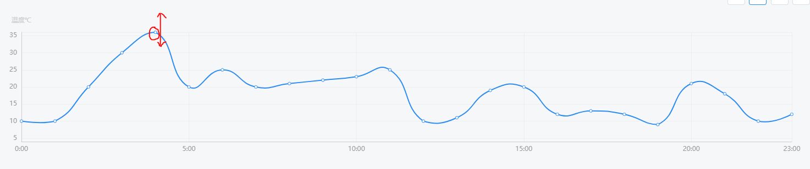

本篇文档主要是利用echarts实现可拖动节点的折现图，在echarts中找到了一个demo，传送门：https://echarts.baidu.com/examples/editor.html?c=line-draggable,但是不是用vue写的，并且在改写为vue组件的过程中遇到了很多问题，在百度过程中发现并没有相关的文档，所以决定自己开发，并在demo的基础上开发了一些实用的功能，所以把这个过程记录下来。文档中还有很多不够完善的地方，欢迎讨论哈！
需求：制作一个折线图用于显示当前24小时的数据，并且可以通过拖动折现图设置数据
效果图如下：初步看和一般的折线图没什么区别，但是实际如图示，节点是可以上下拖动的

代码如下：
<template>
<div ref="dom" class="charts chart-bar"></div>
</template>
<script>
import echarts from 'echarts'
import tdTheme from '_c/charts/theme.json' // 这是我自己写的主题文件，可以不用管
import { on, off } from '@/libs/tools' // 这是其他一些方法函数，可以不管
echarts.registerTheme('tdTheme', tdTheme)
export default {
name: 'ChartLine',
props: {
text: String,
subtext: String,
yName: String
},
data () {
return {
dom: null,
symbolSize: 5,
// 通过拖动是可以实时改变这里的值的
data: [[0, 10], [1, 10], [2, 20], [3, 30], [4, 36], [5, 20], [6, 25], [7, 20], [8, 21], [9, 22],
[10, 23], [11, 25], [12, 10], [13, 11], [14, 19], [15, 20], [16, 12], [17, 13], [18, 12], [19, 9],
[20, 21], [21, 18], [22, 10], [23, 12]]
}
},
methods: {
resize () {
this.dom.resize()
}
},
mounted () {
this.dom = echarts.init(this.$refs.dom, 'tdTheme')
this.dom.setOption({
title: {
text: this.text,
subtext: this.subtext,
x: 'center'
},
grid: {
left: 50,
top: 40
},
tooltip: {
trigger: 'axis'
},
xAxis: {
min: 0,
max: 23,
type: 'value',
axisLabel: {
formatter (value) {
return value + ':00' // 格式时间显示方式
}
},
axisLine: { onZero: false }
},
yAxis: {
min: 4,
max: 36,
type: 'value',
name: this.yName,
axisLine: { onZero: false }
},
series: [
{
id: 'a',
type: 'line',
smooth: true,
symbolSize: this.symbolSize, // 为了方便拖拽，把 symbolSize 尺寸设大了。
data: this.data
}
]
})
this.dom.setOption({
graphic: echarts.util.map(this.data, (dataItem, dataIndex) => {
const that = this // 因为ondrag函数必须在回调内使用this.position获取实时坐标，此处必须用that替换this
return {
// 'circle' 表示这个 graphic element 的类型是圆点。
type: 'circle',
shape: {
// 圆点的半径。
r: this.symbolSize / 2
},
// 用 transform 的方式对圆点进行定位。position: [x, y] 表示将圆点平移到 [x, y] 位置。
// 这里使用了 convertToPixel 这个 API 来得到每个圆点的位置
position: this.dom.convertToPixel('grid', dataItem),
// 这个属性让圆点不可见（但是不影响他响应鼠标事件）。
invisible: true,
// 这个属性让圆点可以被拖拽。
draggable: true,
// 把 z 值设得比较大，表示这个圆点在最上方，能覆盖住已有的折线图的圆点。
z: 100,
ondrag: echarts.util.curry(function (dataIndex) { // 此处必须用匿名函数，不能用箭头函数，否则拿不到拖动的坐标
let origin = that.dom.convertToPixel('grid', that.data[dataIndex]) // 得到每个圆点原始位置
// let maxY = that.dom.convertToPixel('grid', [40, 36]) // 最高温度为36摄氏度，暂未做封装
// 超过最高温度36将不能拖动,写死的最低点高度为240，最高点为40
if (this.position[1] > 240) {
this.position[1] = 240
} else if (this.position[1] < 40) {
this.position[1] = 40
}
this.position[0] = origin[0] // 控制每个点位只能在y轴方向移动
// this.position[1] = origin[1] // 控制每个点位只能在x轴方向移动
// 实时获取拖动的点位信息并根据此信息重新画图
that.data[dataIndex] = that.dom.convertFromPixel('grid', this.position)
that.dom.setOption({
series: [{
id: 'a',
data: that.data
}]
})
}, dataIndex)
}
})
})
on(window, 'resize', this.dom.setOption({
graphic: echarts.util.map(this.data, (item, dataIndex) => {
return {
position: this.dom.convertToPixel('grid', item)
}
})
}))
},
beforeDestroy () {
off(window, 'resize', this.resize)
}
}
</script>